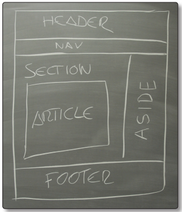

Las etiquetas semánticas ayudan a definir la estructura del documento y permiten
que las páginas web sean mejor indexadas por los buscadores.
a continuacion se mostraran las etiquetas de estructuración semánticas más importantes en el
siguiente documento.

Recio García, J. A. (2016). HTML5, CSS3 y JQuery: curso práctico. RA-MA Editorial. https://elibro-ne
t.bibliotecavirtual.unad.edu.co/es/ereader/unad/106494?page=52